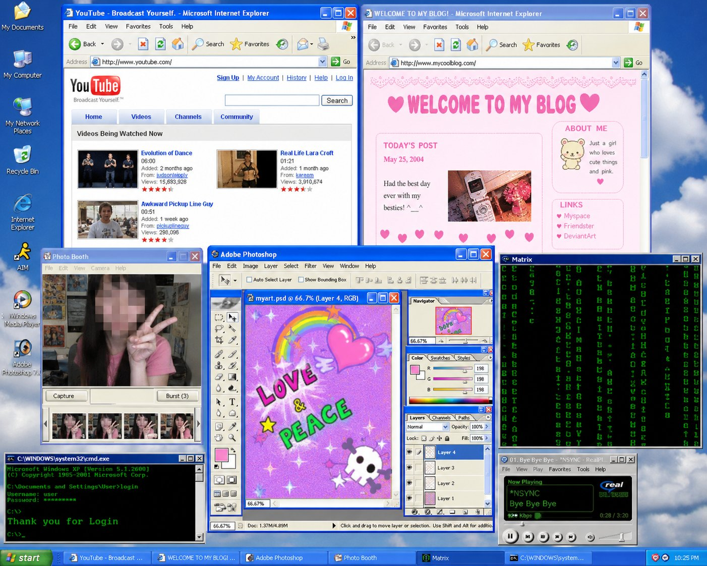

ERROR ✕
postdigital
Warning✕
Daten, Bilder und Systeme sind keine neutralen Werkzeuge.
Claudia Mai
Design / Forschung / Lehre
Postdigital Publishing
PostdigitalPublishing
Bildsysteme, Daten, Publikationen, Lehre
Kommunikation als Oberfläche
Fragmente, Stimmen und Systeme liegen übereinander. Publikationen, Forschung und Lehre werden als aktive Arbeitsflächen sichtbar.

** Thank you for Login **
Archive loaded
press (Enter) to continue
portfolio.mov_ □ ✕
▶
archive.mov_ □ ✕
www.claudiamai.net_ □ ✕
ARCHIV DER ARBEITEN
☁ archive ☁
- Publikation
- Bildsystem
- Lehre
- Daten
Photo Booth_ □ ✕
File Edit View Option Help_ □ ✕
Hue/Saturation✕